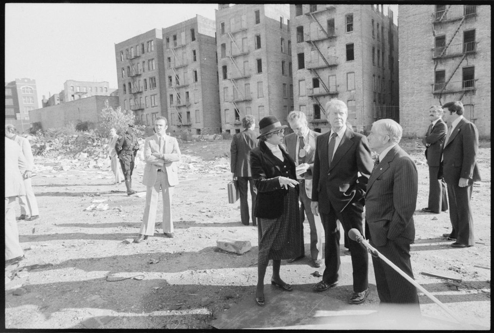
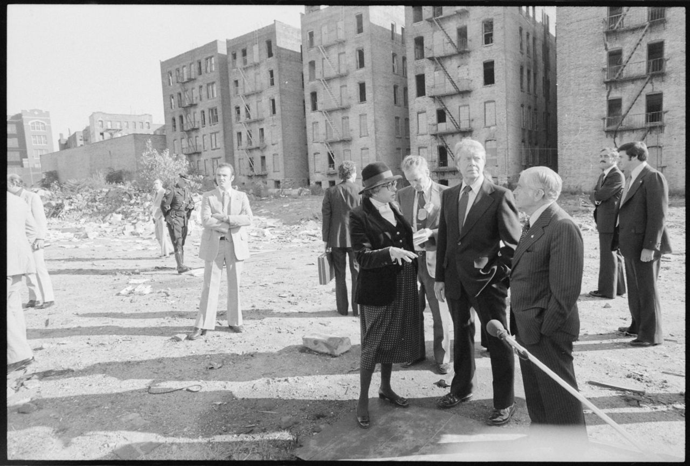
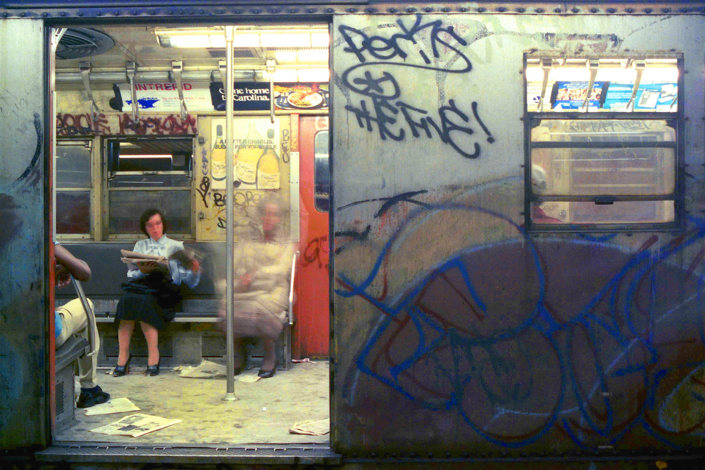
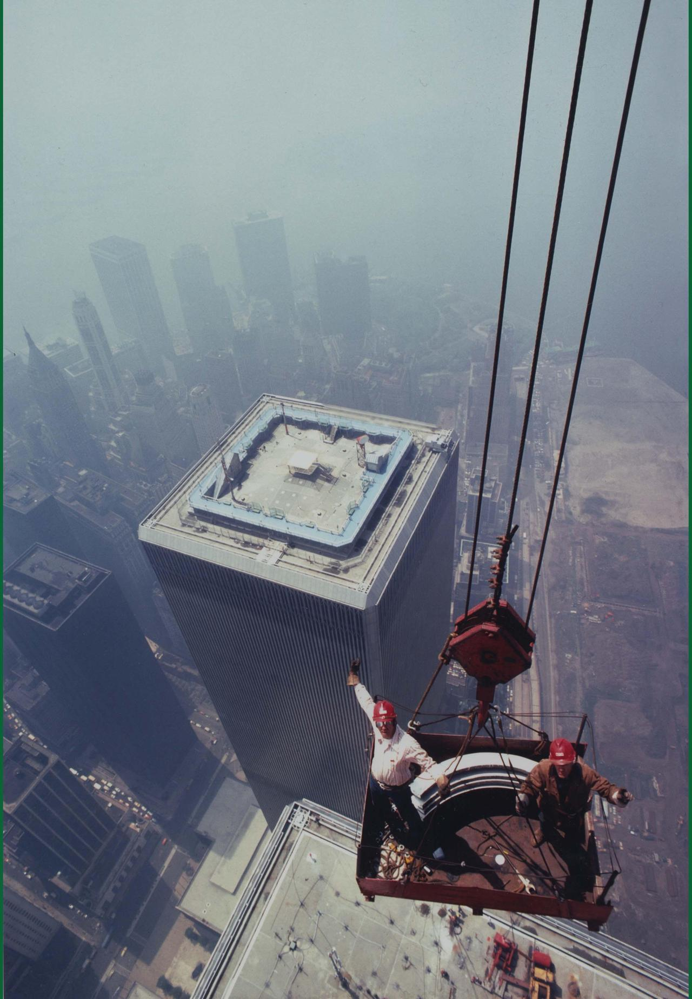
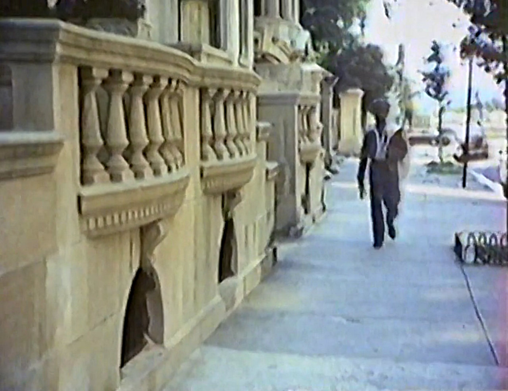

Jimmy Carter fixing the South Bronx in 1977

Jimmy Carter fixing the South Bronx in 1977
Nope but I’ll take a look around…

Ghost on board!

Ironworkers from Local 40 build the World Trade Center antenna in New York, 1979
not a job for the timid

Screen grab from 70s B-movie “Death Promise”, on 89th Street near Riverside Drive, looking towards Riverside Park